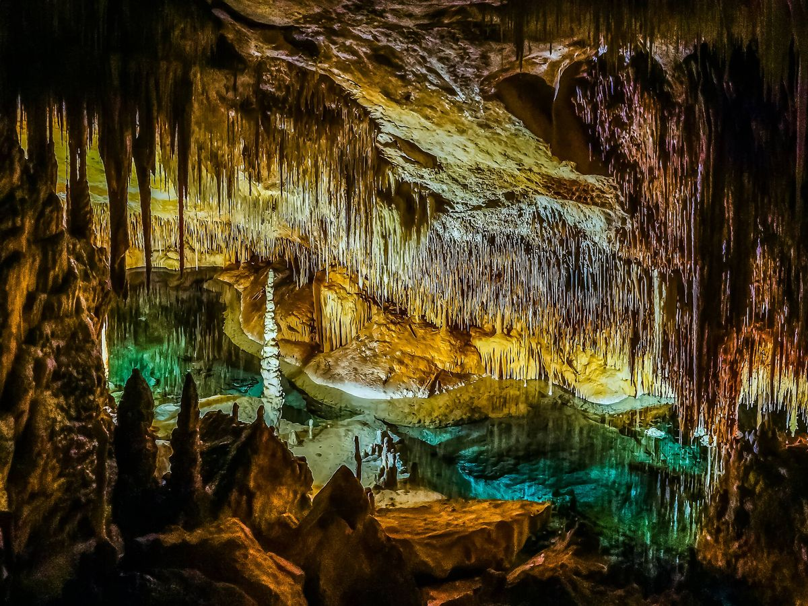
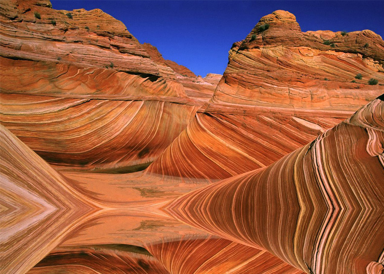
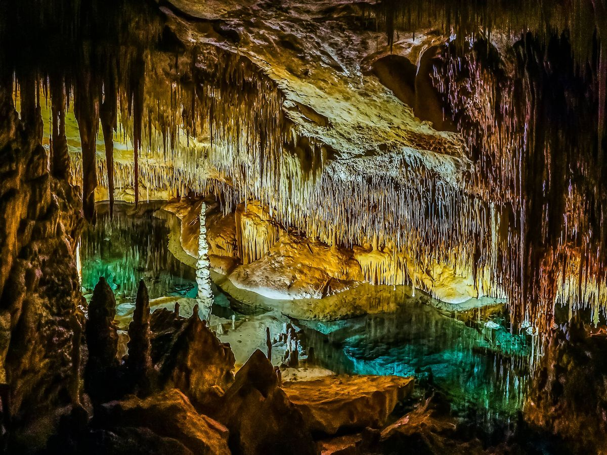
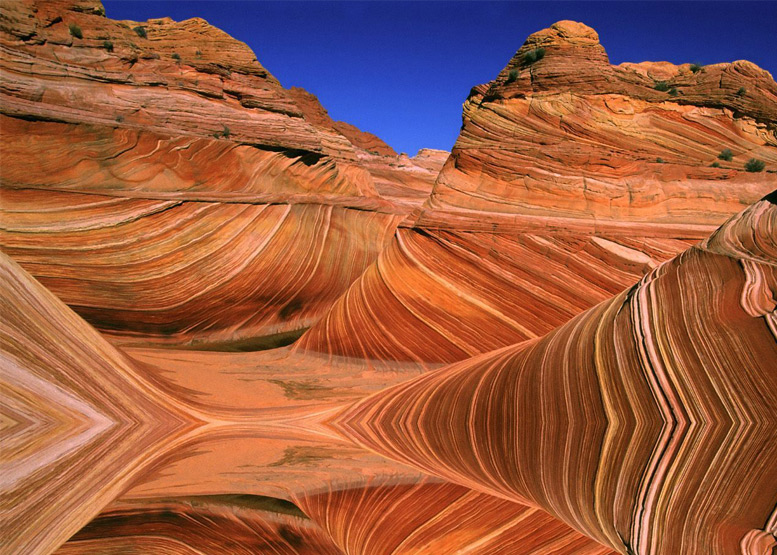
 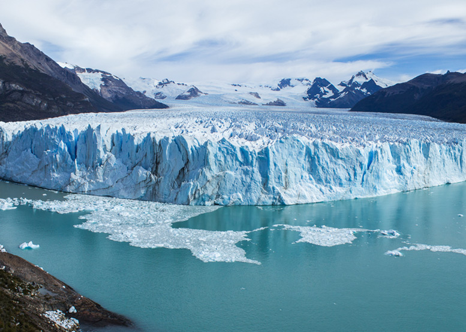
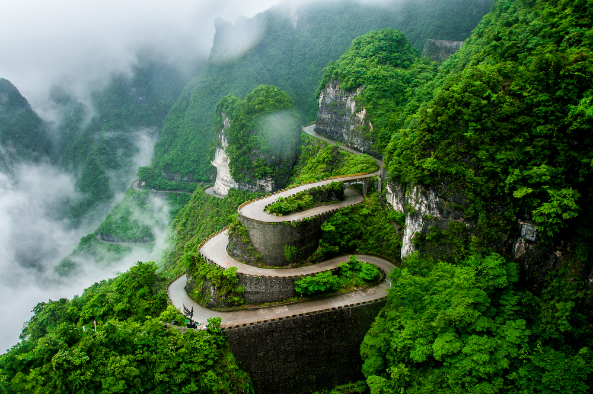
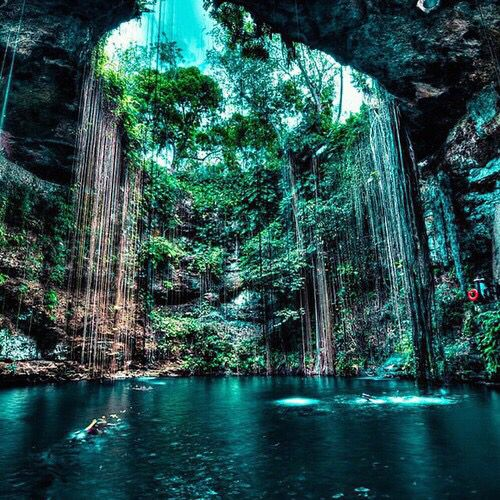
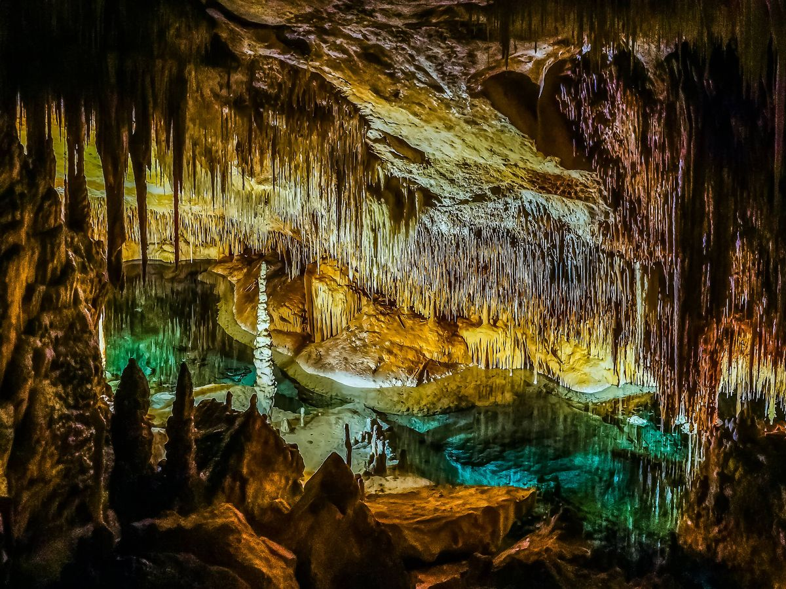
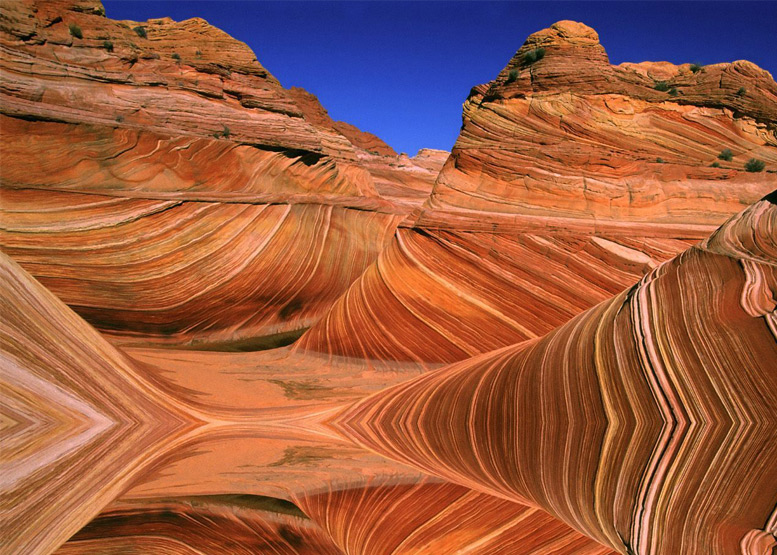
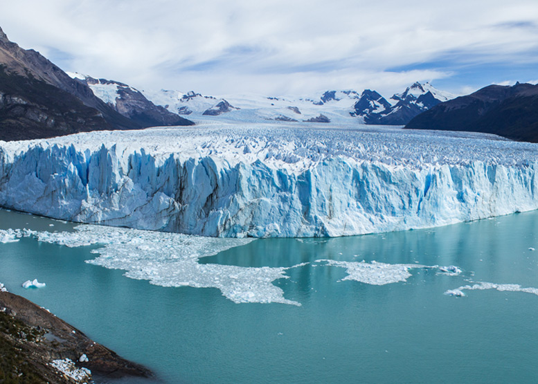
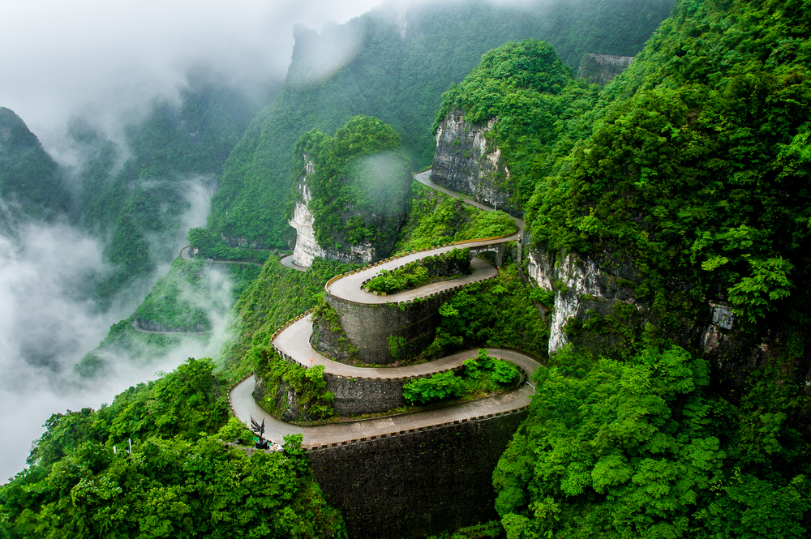
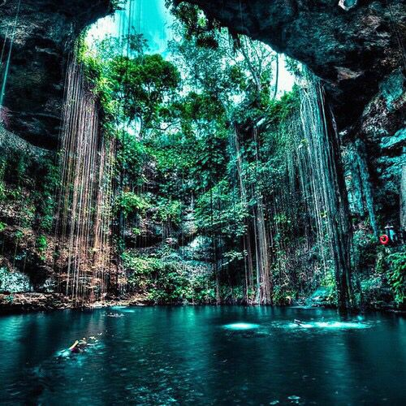
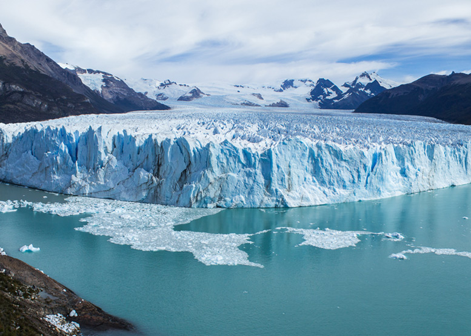
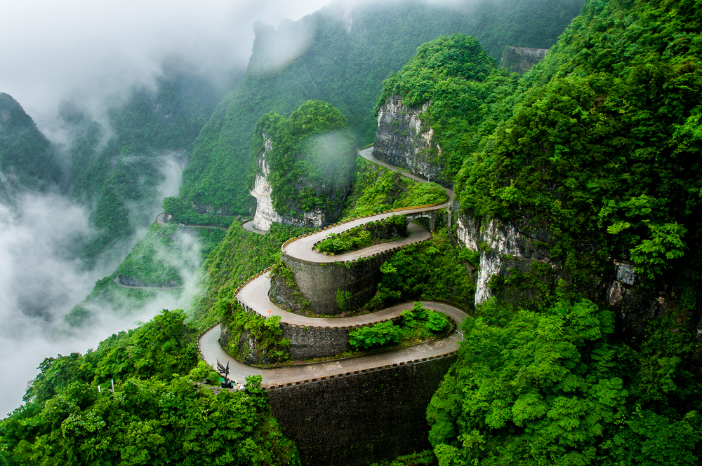
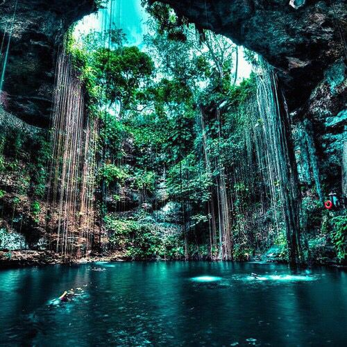
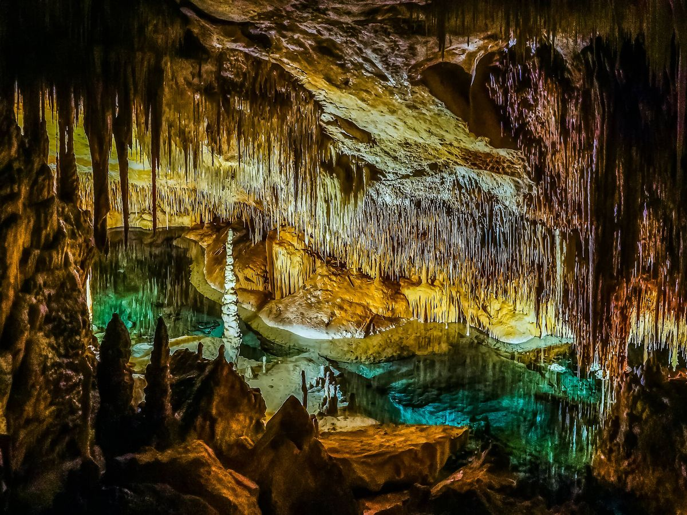
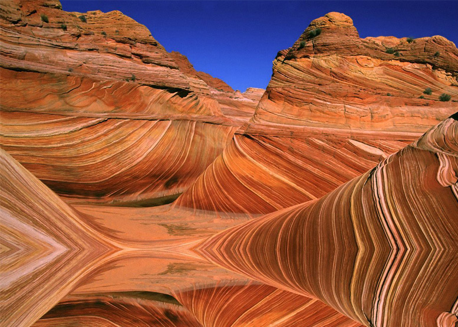
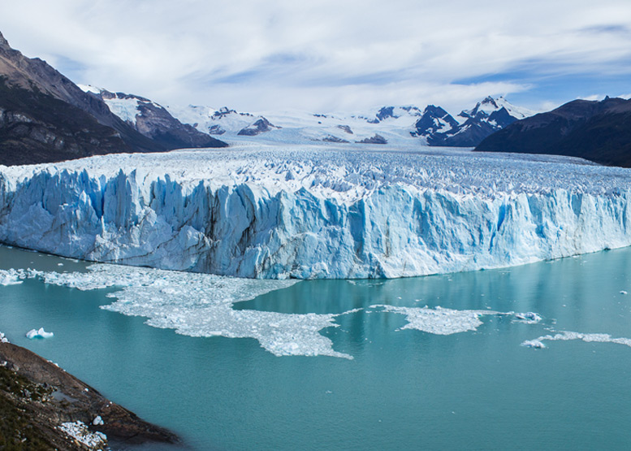
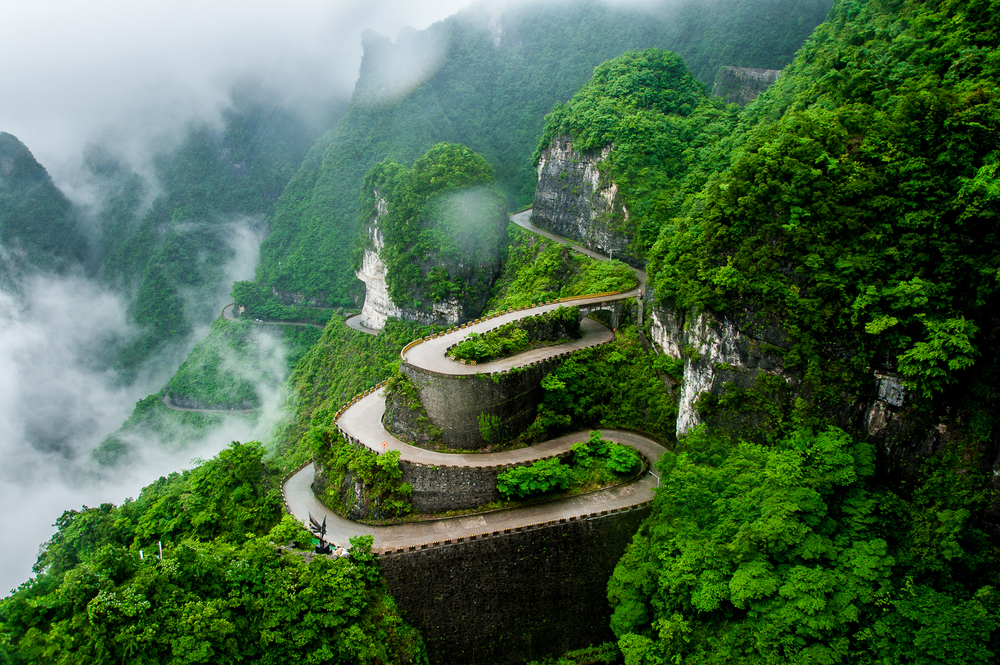
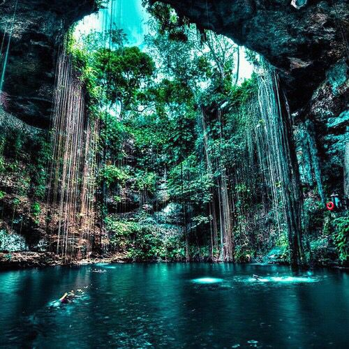
El planeta Tierra, es un planeta terrestre y rocoso. Tiene una superficie sólida y activa, con montañas, valles, cañones, llanuras y mucho más. La Tierra es especial porque es un planeta océano, ya que el agua cubre el 70% de su superficie. Nuestra atmósferaestá compuesta, en gran parte, por nitrógeno. También tiene mucho oxígeno, que nos permite respirar. Además, nos protege de los meteoroides que se acercan a la Tierra, la mayoría de los cuales se desintegran en nuestra atmósfera antes de llegar a la superficie en forma de meteoritos. Es posible que, como se trata de nuestro hogar, pienses que lo sabemos todo sobre la Tierra. ¡La verdad es que no! Aún nos queda mucho por aprender sobre nuestro planeta. Actualmente, hay muchos satélites en órbita alrededor de la Tierra, tomando fotos y realizando mediciones. Esto nos permite saber más cosas sobre el clima, los océanos, la tierra, el cambio climático y muchos otros temas importantes.
La mayoría de la gente es partidaria de decir que hay 5 o 6 continentes. La diferencia es si América es considerado un único continente o dos, porque está en dos placas tectónicas", explica el profesor de Geología de la Universidad de Salamanca, Gabriel Gutiérrez Alonso. Gran Adria: el increíble hallazgo de los restos de un continente perdido que está sepultado bajo el sur de Europa Mientras que para la geóloga Argüello, los "continentes a nivel geográfico son: el americano que se puede o no dividir en tres partes, el africano, el euroasiático que se puede o no dividir en dos, Oceanía y Antártida". Y que en total serían 8. Y para el profesor Sánchez de la UNAM, no se sabe cuántos continentes hay, porque según él, un continente puede ser una cosa convencional más que una detallada o designada con patrones específicos como el tipo de roca, por dar un ejemplo.
En la actualidad, "convencionalmente hay 7 continentes. Pero en esos 7 está incluido Europa, que en realidad es una península del continente asiático, el mayor del mundo. "Entonces están Asia, África, América del Norte, América del Sur, Antártida, Europa, Oceanía", enumera. Como se ve, las discrepancias por el número de continentes son muchas tanto en la actualidad como en el pasado. Y como la ciencia avanza y la Tierra es dinámica, es probable que la cifra siga cambiando. Incluso algunos científicos aseguran que hay un continente sumergido entre Australia y Antártida llamado Zealandia. La expedición que revela los secretos escondidos de Zealandia, el nuevo continente sumergido entre Australia y Antártica
"Tenemos 7 continentes hace muy poco, unos 30 o 40 años, porque antes no existía esta manera de ver al mundo partido en placas tectónicas y la consideración de que las placas tectónicas pudieran delimitar los continentes", dice Sánchez.